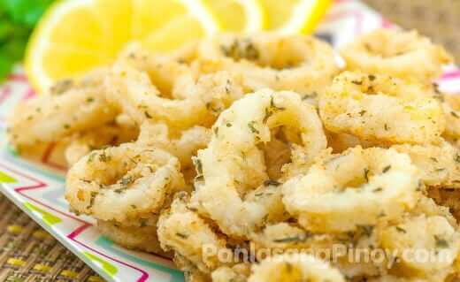

FILIPINO RECIPE WEB
Unleash Your Inner Chef: Delicious Recipes Await.

WHAT IS CALAMARI?

Calamari is probably one of the easiest and quickest appetizers to prepare. Every time we order calamari in restaurants, I am always surprised on how fast the servers get back to us with the order already with them — still hot and crunchy on the outside, while very soft in the inside.
WHAT ARE THE INGREDIENTS?
- 1 lb. calamari rings soaked in milk for 3 hours
- 1/2 cup all-purpose flour
- 2 teaspoons garlic powder
- 2 teaspoons dried parsley flakes
- Lemon wedges
- 2 cups cooking oil
- Cooking Procedure
INSTRUCTIONS
- Combine the flour, salt, garlic powder, and parsley flakes. Mix well and set aside.
- Heat the cooking oil in a wok or a deep cooking pot.
- Drain the milk of the calamari. Dredge the calamari rings one-at-a-time on the flour mixture. Make sure that the calamari ring is completely coated with the mixture.
- Deep fry the coated calamari rings on hot oil for 2 minutes or until the calamari turns light brown.
- Strain the calamari from the wok or cooking pot using a skimmer or strainer. Let the excess oil drip.
- Transfer the fried calamari in a serving plate.
- Serve with lemon wedges.
- Share and enjoy!